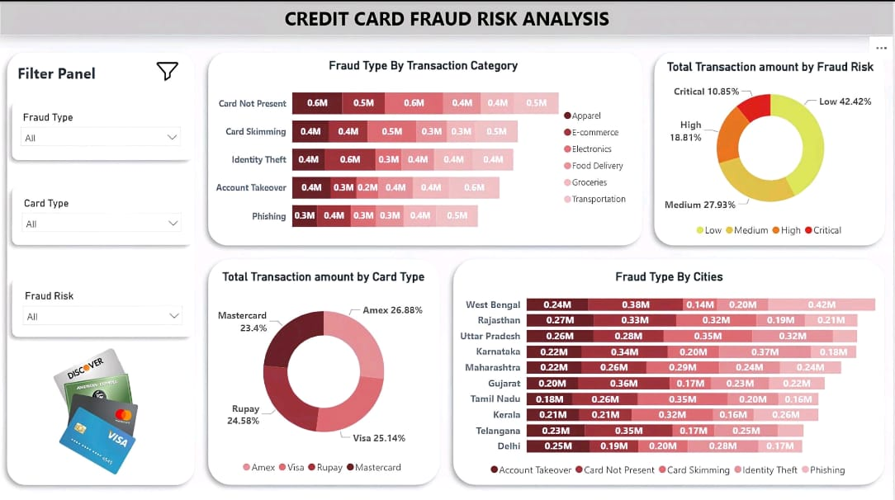

My Projects
Explore my data analytics dashboards, web apps, and video demos.
Tokyo Stock Exchange Dashboard
This interactive Tokyo Stock Exchange Dashboard is designed to track and visualize core financial market movements, featuring major tickers like N225 and 7203.T. Built using advanced Power BI capabilities, it incorporates dynamic DAX measures and unpivoted trend analyses to provide a granular look at trading volumes and portfolio distributions. The interface offers multiple comprehensive views that seamlessly convert raw stock exchange datasets into clear, actionable visual insights. It serves as a robust analytical tool for monitoring overall market returns and comparing ticker-specific performances at a glance.
Supply Chain analysis
This comprehensive Inventory and Supply Chain Management Analysis dashboard provides deep visibility into complex operational workflows and logistics performance. Built to process large-scale logistical metrics, it features detailed visual breakdowns of warehouse utilization, regional transportation costs, and units sold over time. The interactive interface also highlights crucial supply chain indicators, including average lead times by category, backorder counts by order status, and inventory levels segmented across regions. By turning raw supply chain data into dynamic visual cards and charts, it enables efficient monitoring of storage efficiency, operational bottlenecks, and automated processing pipelines.
Monster Energy Drink Creative Sales Dashboard
This dynamic Monster Energy Drink Creative Sales Dashboard highlights an engaging multimedia approach to product performance tracking. Featuring a featured video walkthrough, it monitors key commercial metrics such as total revenue, expenses amounting to $560.00 million, and a total sales volume of 512 units. The interface also incorporates product-specific details like a calorie count of 220 and a caffeine level of 160. By blending striking product visuals with critical financial data, it delivers an impactful showcase of query performance and sales analytics.

Credit card fraud risk analysis
This analytical Credit Card Fraud Risk Analysis dashboard provides a clean visual breakdown built for fast database auditing and security reviews. It features an interactive filter panel on the left alongside comprehensive metrics like total transaction amounts categorized by card type and fraud type. The interface highlights critical risk factors, including regional transaction breakdowns by cities and risk levels categorized across various fraud types. By structuring complex transactional datasets into clear charts and doughnut graphs, it enables rapid identification of suspicious patterns and vulnerable sectors.